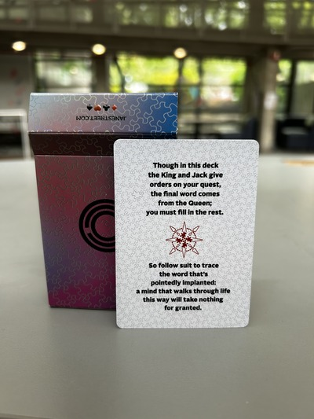
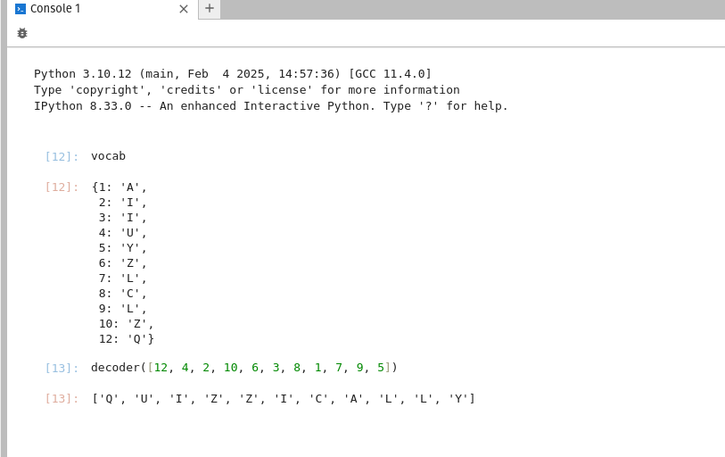
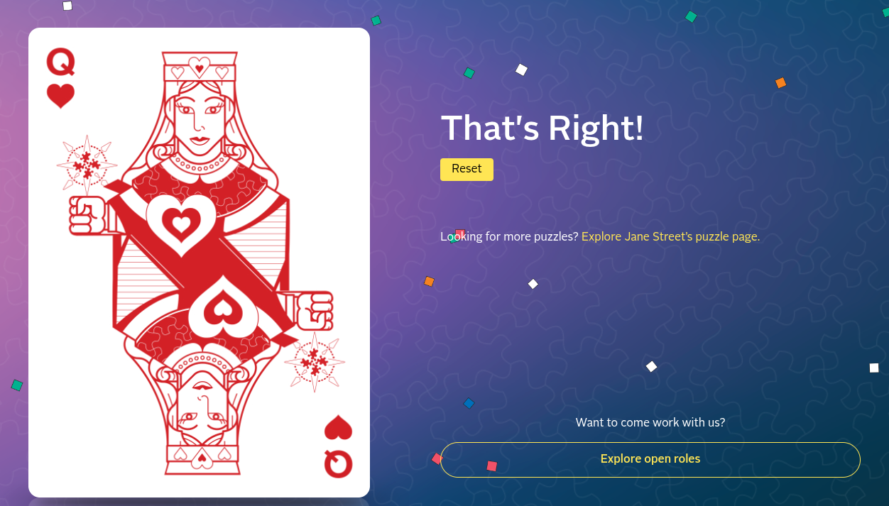

Jane Street Puzzle Deck Edition IV Solution
Recently, I recieved a cool card deck and a t-shirt of questionable quality from a guest speaker at Columbia. Upon further inspection yesterday I realized that there was an extraneous card that held a cryptic clue:
The deck itself is a standard 52 cards; The intruiging parts are that:
- Each card has has a compass on its back showing North.
- The face cards all hold different clues: the Jacks hold different card addresses in their hands.
- Each King holds 1-4 swords.
- Some cards have hollow pips.
- The clue card states that 'final word comes from the Queen'.

Solution
Most of the challenge from this puzzle was due to the open-ended nature of the 'leads'. The wording of the clue card played a big part in finding the solution.
My first attempt was to organize the cards into a series of sequences denoted by the Jacks and ordered by the Kings. This didn't lead anywhere, except for the next step, which was using all of the other hollow-pip cards to fill the sequences. After this step, I was kind of stuck but re-reading the clue card gave me the information I needed: specifically, in the form of the word trace and the phrase "pointedly implanted". That hinted towards some sort of geometric pattern so I started looking for polygonal patterns.

Observe the hollow pips at each column. If you were to draw a line between each hollow pip in the column in descending order, you would find the letters: Z, L, C, L, Z, Y, O, I, I, A[CE], Q[UEEN]. The last two were simple guesses based on the clue card if I'm being honest.
At this penultimate step, I figured out the actual use of the Jacks. They denoted the order of the letters.
A quick python script for style points:

There you have it! I also think the t-shirt is a puzzle but I haven't had the time to take a look at it.